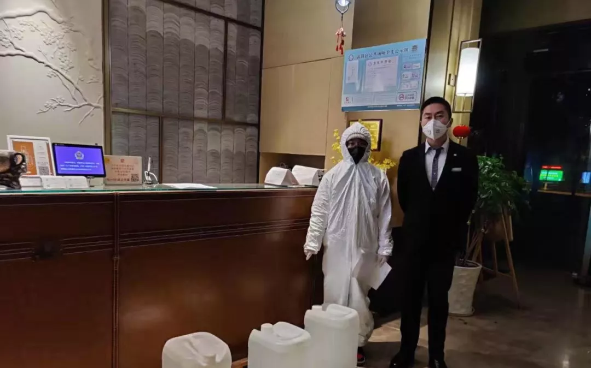

1月23日
上午10时20分，湖北武汉汉口火车站进站口，工作人员向旅客解释离汉通道暂时关闭的情况。
封城那一夜
财新 萧辉
回到宾馆，已近五点多，大家约好九点出发去汉口火车站看历史性的封城时刻。本来应该小睡一会儿，但是一夜情绪跌宕起伏，说什么也睡不着。此刻恐惧又如水般将我淹没。这次的新型肺炎病毒很容易传播，有专家说自己因为没有戴护目镜就感染了，而我到重灾区接触了那么多疑似病人。想起一位医生说的，这个病有一定比率的致残率。我突然手软、脚软，大脑开始云游了：想想自己还有什么未实现的愿望，有没有欠谁的钱，想和谁来一场倾城之恋。奇奇怪怪的念头串了一晚上，最后我想，我要好好活着，我还想用力去爱，做我喜欢做的事，珍惜我喜欢的人。渐渐释然。
收到一个友人的问候，问我喜欢吃什么，给我寄过来。大家果然知道我这吃货，再害怕也要吃好的。不过朋友认真问我需要什么帮助时，我很郑重回答：如果万一我不幸感染了，请帮我找好的医疗资源，我不希望感染了没地方治。
躺了一个多小时，爬起来写了武汉交通封城的消息稿，这应该是第一家现场报道了吧。高队改完发掉，早上九点半，我们又开车到汉口火车站看封站情形。这是汉口火车站自1898年建站以来首次封站，个中意味值得揣摩。
根据车站规定，持有上午10点之前车票的人都可以乘车离开。安检人员站成一列，核查乘客信息，有些持有中午或者下午火车票的旅客被禁止进入，有人被迫回去退票。但到最后五分钟，只要手中持有当日票的乘客都可以进站离开武汉，再一次诠释要坚持到最后一刻的鸡汤案例。这个做法一方面颇有人性温度，但另一方面，新冠肺炎潜伏在人体内不易被发现，感染者可能并不发烧，排查难度难免会有所增加，想想又让人忧虑。
上午10点钟，武警人员站成一列，汉口火车站正式封站。我们留守下来了。
截至1月23日24时，我国29个省（区、市）累计报告新型冠状病毒感染的肺炎确诊病例830例
1月25日
大年三十晚上，武汉市第四医院古田院区门诊，排队就诊的病患依旧很多。
昨夜，武汉没有除夕
界面新闻 刘海川 王健 杨舒鸿吉
明煮了一碗速冻水饺，端给了妻子叶柔。她勉强吃了几个，放下了碗。在这个四口之家的饭桌上，仅有前两天剩下的半碗菜薹。
家里现在只有速冻水饺。武汉封城以后，多家超市的方便面和速冻食品的货架被人们扫购一空。
在新型冠状病毒感染肺炎爆发前，叶柔夫妇本来已为这个春节做了周全的安排，并且提前想好了年夜饭的菜单。但一切都已经改变。
有了解他家情况的邻居，送来一包蔬菜和水果。徐明从门口拿进来，放在地上。门上的对联和福字，是徐明除夕下午贴上的，成了这一家和春节的唯一关联。贴完之后，他拍照发了条朋友圈：“再难也要过年。”
截至1月25日24时，我国30个省（区、市）累计报告新型冠状病毒感染的肺炎确诊病例1975例
1月28日
接送医务人员的司机全副武装。
武汉街头的“摆渡人”：每分钟处理1000条信息，不是不怕感染，停了医护人员怎么上班
北青深一度 梁婷 李一鸣 陈威敬
武汉公共交通关闭当天，多个民间志愿者车队群同时成立，一些由个人组织，一些由行业协会发起，志愿者义务接送医护人员，运送物资。
武汉出城通道封闭以来，志愿司机为生养自己的武汉尽一份力的同时，也要面对突来的意外和患病的风险，志愿者中，一些人需要背着家人“偷偷”出来帮忙、一些司机每天要接上百个电话，义务接送十几趟，工作22个小时。志愿司机中有人发烧，有人出车祸，也有人因承受不了家庭的压力退出服务。
因为志愿车队不够专业，发起人曾考虑过将志愿车队停下来，但因很多医护人员依靠志愿车队，“停下来”实难做到，目前有上千位民间车主加入志愿车队，往返社区和医院之间，成为武汉特殊时期的民间“摆渡人”。
截至1月28日24时，我国31个省（区、市）累计报告新型冠状病毒感染的肺炎确诊病例5974例
1月30日
因为工作需要，工作时间必须戴上护目镜，寒冷的冬日里，护目镜上总隔着一层水雾。
我守护在武汉金银潭的重症病房
三联生活周刊 黄子懿
大年三十上午，院里就打电话给我，说报名卫健委通过了，“你赶快去参加培训！”我就急忙赶去培训，培训大概两个多小时，主要讲了一些新型冠状病毒的防护知识。培训完了后，我问大概什么时候会走？当时得到答复说还没有通知，“估计是要到武汉一个类似的小汤山的新建医院去，可能还要几天时间。”我就回去吃年夜饭去了。
除夕夜的傍晚六点，家里年夜饭刚上桌，电话就来了，说：“今天晚上马上就要走！你赶快赶到医院，到医院领完物资就赶快去机场。”我匆匆地吃了一碗家里的米饭，然后就出门了。
家人还是很支持我的，但也不能说完全没有顾虑，主要就是个人的防护。走之前，爱人反复叮嘱我，“一定要做好防护”。她帮我准备了一些过年的衣服，我当晚把它穿上，当作是护身符。我也准备了很多个人物品，因为我知道，这次可能短时间内回不来。
截至1月30日24时，我国31个省（区、市）和新疆生产建设兵团累计报告新型冠状病毒感染的肺炎确诊病例9692例
1月31日
和第七医院一墙之隔的居民楼，左边的老奶奶在晒着太阳织毛衣，右边的老爷爷和老奶奶在晾衣服，这样的场面让人抱有对美好生活的希望。
肺炎疫情下的武汉高考生：节前紧急停课 节后教师排班在线授课 鼓励自主学习
经济观察网 记者 万敏
不管是通过何种方式授课，老师们督促学生的向学之心都是一样的。
在疫情阴影重压下的武汉的教师们，积极采取各种方式鼓励学生的学习信心和热情。在一封流传于武汉市各中学的教师致考生信中，一位令人尊敬的老师写到，“延迟开学，各类辅导暂停。在生命面前，试卷、分数、名次显得轻如鸿毛。学生宅在家里，家长急在心里。‘教是为了不教’。在不教、不管的情况下，学生是否愿学、会学、高效地学，成为检验一所学校、一个教师、一个家庭教育水平的天然试金石。受了12年的教育，却不会主动学习，无疑是教育的失败。不管怎么自诩‘名校’‘负责’‘学霸’‘天才’都难掩其羞。不能自主学习，即使考上清北，其发展情况也令人堪忧。”
在提出数条在家自主学习的具体建议后，在信的末尾，这位老师说到，“学会主动学习，你战胜的不仅是病毒，更是一个平庸的自己！”
武汉市的肺炎疫情，将对今年的春季开学、高考情况造成何种具体影响仍是一个未知数，但正如那些奋战在医疗、交通物流等疫情一线的人们一样，各行各业的人们依然在为了一个光明的未来，守土有责，奋力前行。
截至1月31日24时，我国31个省（区、市）和新疆生产建设兵团累计报告新型冠状病毒感染的肺炎确诊病例11791例
2月1日
志愿者配送消毒水到联盟酒店。
武汉医护酒店支援联盟发起人：我们一群人干了良心事
新京报
我不想用最坏的恶意来揣测人心，确实有一些让我们寒心的言论，但是极少部分，大部分是不错的。我想对联盟的参与者说，大家都很棒，有的酒店因为地理位置、交通等原因，加入后还没接待过医护人员，他们自己也很着急，特别想贡献力量。我觉得，只要加入就是提供了爱心，我们是值得被大家记住的集体。
饿了么骑手正在为武汉一线医护人员运送配餐。
外卖订单里的武汉：穿越隔离的爱情、亲情与勇气
人物 丁畏
除夕前夜，因疫情蔓延，武汉宣布封城，机场、火车站、市内公共交通停闭，江城困围。封城以来，许多武汉人都承受着分离的苦楚，担心年迈独居的父母买不到菜，惋惜爱人最需要的时却不能陪在身边，常年在外工作的父亲错过仅有的看望孩子的机会。
疫情可以隔绝空间，却不能隔离爱。如今在武汉，有一条链接外界的隐秘通道正在建立起来。过去的一周，在阿里巴巴的平台上，共有超过20万个异地订单被送往武汉，它们是外地女儿给行动不便老人买的菜，是困守别处的父亲送给儿子的新年礼物。
这些爱心任务，全都落在街头驱驰的送货骑手身上，在他们眼里，可以看到一个未被隔绝的武汉。
截至2月1日24时，我国31个省（区、市）和新疆生产建设兵团累计报告新型冠状病毒感染的肺炎确诊病例14380例
2月2日
2月1日，在入住武汉一家新型肺炎特殊病人定点医院的第二天，龚林顺产一个7.1斤男婴，母子状态很好。
肺炎时期的“生门”故事
剥洋葱 解蕾 祖一飞
也许，长大以后，这个7.1斤的男婴难以理解，2020年的时候他来到世间有多波折。
2月1日，他的妈妈在湖北武汉顺利分娩。此前，他的奶奶和爸爸先后确认感染了新型肺炎。被收治后，妈妈也被确诊为新型肺炎。
这位出生仅两天的男婴目前各项指标正常，由单独育婴房看护，他的妈妈龚林在医院隔离治疗中。
肺炎疫情下的武汉，像龚林这样的孕产妇生育问题正困扰着不少家庭……她们面临着怎样的困境？疫情如何改变她们的生活？
截至2月2日24时，我国31个省（区、市）和新疆生产建设兵团累计报告新型冠状病毒感染的肺炎确诊病例17205例
2月3日
工作人员在处理遗体。
我在武汉殡葬一线，我们现在需要一些援助
谷雨实验室
我们这儿，常人完全无法想象。出车回来，了不起洗个手，把自己消个毒，坐几分钟。哪有什么上班时间，二十四小时轮着的，比如我一个班，要从早上7点一直上到第二天下午6点。我们职工回来就这样躺着，坐在沙发上等车，等着下一趟。晚上经常就是通宵，累得饭都不想吃。
我们有的职工连水都不敢喝，因为喝了要上厕所，不好脱防护服。防护服不透气，大家全身都是汗。我们还有些职工在生病，带着生病的身体工作。有几个人有些发热，医生建议在家隔离，但没办法，单位太忙了，还是要来帮忙。
做我们这行的，本来心理上都已经过了这一关了。殡仪馆的职工，心理上应该是比一般人更能承受压力一些。但看到这些家属，这些遗体，真的是很让人心酸。
都是一些年纪大的人，去不了医院，就在家里吃药。有些年纪大的人有基础病，扛不住，突然就去世了。所以说家里人，怎么说呢，都很崩溃。
我前几天拉了一具遗体。他从开始进入医院，家属就看不到人了，直到去世，最后家属看到的也就是骨灰盒。看不到人这一点，让人很心酸。从生病一直到死亡，在医院里面隔离，他也看不到家人，家人也看不到他。这位死者是ICU的，但没有确诊，最后死亡原因就是重度肺炎。
截至2月3日24时，我国31个省（区、市）和新疆生产建设兵团累计报告新型冠状病毒感染的肺炎确诊病例20438例
2月4日
火神山建筑工地工人晚上用棉被御寒。
直击火神山医院：首批病人已经入院，现场忙碌装配收尾
财经 刘以秦 韩舒淋
2月2日晚7点半，火神山交接仪式已经完成，武汉籍的华为工程师离开现场，返回市区休整。他告诉妻子，可以看火神山的VR直播了， “这是我们为武汉人民做的。”他说。
建筑工人在完工后会陆续撤出，但技术工程师们的后续任务更重，他们要保证在医院的整个使用期间，设备一直保持顺畅。
截至2月4日24时，我国31个省（区、市）和新疆生产建设兵团累计报告新型冠状病毒感染的肺炎确诊病例24324例
2月5日
金泰亨吧公布的物资到达每一家医院的时间。
饭圈救援2020
GQ报道 炜铖、伊文、呈杰
除夕下午，小z终于找到一批能发货的口罩，2300只N95。她本打算直接捐给医院，但医院电话一直占线。一旦集资完成，后援会的首要任务是让粉丝看到花钱的效果。当时，公开发起捐赠的公益组织并不多，武汉红十字会是其中规模最大的一家，又有官方认证。小z把物资捐给了武汉红十字会。
捐后不久，小z看到红十字会公开的账目，“做得乱七八糟”，被曝光积压口罩不发，央视直播还把人记者赶走了。“气得血压都要高了”，采访里，她强调自己的愤怒。
每天凌晨两三点，小z进入直播间。她看小叉车，也看工人铺地基，但更多时间是在看弹幕：有人给施工设备取名叫“吴三桂”，也有人说“上海监工来交班了”，每次都有很多人陪着她一起看。
她不想看到“那些消极负面的新闻”了，小叉车看上去很开心，她也因此觉得日子开心了起来。半小时后，女孩关掉直播，睡着了。
截至2月5日24时，我国31个省（区、市）和新疆生产建设兵团累计报告新型冠状病毒感染的肺炎确诊病例28018例
2月7日
李文亮医生
普通人李文亮
人物 罗婷 杨宙 罗芊
他的核酸检测结果出来了，阳性。他说：尘埃落定，终于确诊了，还配了一个狗狗的表情。他在病房里看到许多网友的鼓励，在微博上感谢大家，「谢谢大家的支持，我没有被吊销执照，请大家放心，我一定积极配合治疗，争取早日出院」。
再之前，工作群里号召医生们报名到防疫一线时，他还说了一句：「我好了也报名」。在网上流传的另一张图里，有人在微信里问他：您病好以后，有什么打算？他说：好了就上一线，疫情还在扩散，不想当逃兵。
截至2月7日24时，我国31个省（区、市）和新疆生产建设兵团累计报告新型冠状病毒感染的肺炎确诊病例34546例
2月12日
疫情爆发以来，武汉市以居委会为单位，开始承担起组织社区居民共同抗击疫情的任务。
“封城”二十日里的武汉百步亭
澎湃新闻
我们和病人从早上8点一直等到晚上12点多，后来送了4个去做核酸再送回来，又送了4个直接去住院，送完最后一个都凌晨两点多了。
2月10日，送了10个疑似病人去隔离点，现在隔离点也可以做核酸，还要送3个确诊的病人去住院。
其中有个人，之前送她去做核酸检测，做完了送她回来就是不下车，非要送到医院，死活不肯下来。最后没办法，把她送到医院让她去排队，然后掉头回来接剩下的人去做核酸。耽误了两个小时，其他的人在风雨中冻得瑟瑟发抖。
她确诊为阳性，我们上门做了三天工作，劝她去隔离，她不去，让她去住院，她也不去。10号那天，派出所民警、纪委督办的人都上门劝她，她没戴口罩，在那“声嘶力竭”地叫喊。
她刚开始喊的时候，我就把民警肩膀上的执法记录仪拿下来，退到两米远，拍了全景，那简直口沫横飞啊。民警距离她一米远，很克制地劝她安静，劝她戴口罩，她就是不戴。
她说隔离点没有家里好，方舱医院会交叉感染，去医院也不行，她说已经好了，都不发烧了，她说什么人家去医院几天就死了，“去医院就是要死”。
其实按照传染病防治法，她这样是违法的。我们好话说尽，说给你安排最好的酒店，也不行。最后已经到什么（程度）了，给你提供火神山（的床位），最好的医院啊。她说跟家人商量一下，商量到最后又不去。晚上12点多，我们终于把她送到酒店去了。
剩下还有一些新增的疑似病人，但明显比之前少了，昨天（11日）新增了两个，一个已经做了核酸，另一个今天安排做核酸。现在新增的基本上都是密切接触者，主要是家属。我们下一步工作主要就是密切接触者的排查。
这两天明显感觉到，好像一下子进入快车道了，情况都在好转
截至2月12日24时，我国31个省（区、市）和新疆生产建设兵团累计报告新型冠状病毒感染的肺炎确诊病例59804例
2月24日
上午10时20分，湖北武汉汉口火车站进站口，工作人员向旅客解释离汉通道暂时关闭的情况。
火线救援50天
财新 包志明 萧辉 高昱
2月15日上午，刚刚经历了一6 夜冬日雷雨和大风的武汉大学纷飞，袁鸣早早进入病房查房。依次穿上蓝色隔离服、白色防护服，戴上手术帽、面屏、和护目镜，套上手套和脚套——这是进入隔离病区的标准防护，每位医护人员穿戴的时间需要大约半个小时，最后在防护服外给彼此写上名字。
在疫情最为严重时，这样一整套防护装备极为珍贵，很多医院只能保证最一线的医生和护士，而且每天只有一套。医护人员穿着这种密不透风的防护装备，需要连续工作七八个小时。
袁鸣走进一间间病房，依次询问患者身体状况、记录数据。突然，有护士进来喊：“袁医生，19床病人呕吐了，呼吸困难，快过去看一下吧。”
截至2月24日24时，我国31个省（区、市）和新疆生产建设兵团累计报告新型冠状病毒感染的肺炎确诊病例77658例
4月8日
3月28日，由黄冈开来的城际列车C5604抵达武汉火车站。
武汉启封
冰点周刊 王嘉兴 鲁冲
武汉是一点点开的，不是4月8日零时“轰然”打开。
很难说清开封的第一丝裂缝是什么时候，一名志愿者觉得是时隔2个月再次被查酒驾的时候；一名武汉协和医院的医生说，是他重新接到因打架斗殴来看病的患者的时候；一名住在商业街边的居民发现，放了两个月“武汉加油”的大屏幕又开始放广告了。
武汉正在“一寸寸”地打开。歇业多日的早餐店门口重新排起长队，一提面下锅，蒸腾起雾气，人们摘下口罩，端着热干面边走边吃。街头重新有了“汉骂声”。住宅临街的居民早上被车喇叭吵醒。
“封城”76天后，武汉终于恢复与其他城市的自由流动。
截至4月8日24时，我国31个省（区、市）和新疆生产建设兵团累计报告新型冠状病毒感染的肺炎确诊病例81865例
4月24日
“
我已经错过了大半个春天，现在要抓住春天的尾巴。”
截至4月24日24时，湖北省及武汉市所有新冠肺炎重症病例实现清零。